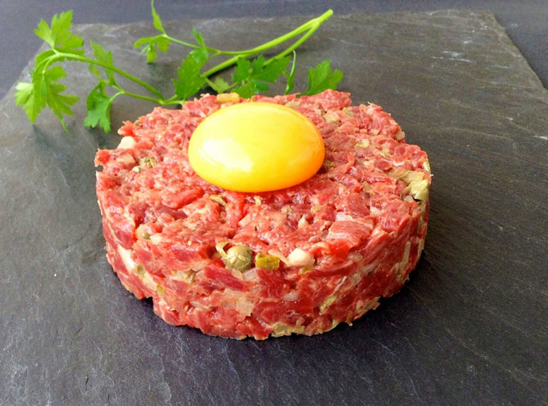

Stake Tartar Recipe
Home

Description
Steak tartare is a dish of raw beef, finely chopped by hand and mixed with ingredients like onion,
capers, gherkins, mustard, Worcestershire sauce, and a raw egg yolk, served cold and usually accompanied
by toast or fries. It's a classic of French cuisine, prized for its soft texture and bold, savory flavor.
- 2 egg yolks
- 1 tbsp Dijon mustard
- 1 tbsp capers
- 2 tbsp finely minced shallot
- 2-3 conrnichons
- 1 tbsp fresh parsley
- 1 tsp Worcestershire
- Tabasco
- 1 tbsp olive oil
- Salt and black pepper
Steps
- Chill everything
- Prep the flavorings
- Trim the beef
- Cut the meat
- Make the dressing
- Combine
- Season
- Plate
- Serve immediately